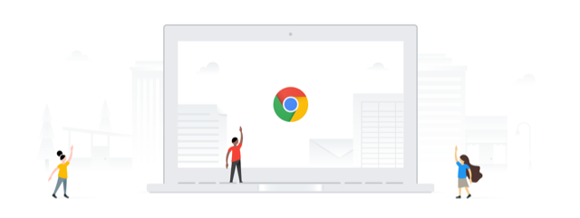

<!-- Copyright 2016 The Chromium Authors. All rights reserved.
     Use of this source code is governed by a BSD-style license that can be
     found in the LICENSE file. -->

<link rel="import" href="chrome://resources/cr_elements/network/cr_network_icon.html">
<link rel="import" href="chrome://resources/cr_elements/network/cr_network_select.html">
<link rel="import" href="chrome://resources/cr_elements/network/cr_onc_types.html">
<link rel="import" href="chrome://resources/polymer/v1_0/iron-flex-layout/classes/iron-flex-layout.html">
<link rel="import" href="chrome://resources/polymer/v1_0/iron-icon/iron-icon.html">
<link rel="import" href="chrome://resources/polymer/v1_0/iron-iconset-svg/iron-iconset-svg.html">

<iron-iconset-svg name="oobe-welcome" size="24">
  <svg>
    <defs>
      <g id="add"><path d="M19 13h-6v6h-2v-6H5v-2h6V5h2v6h6v2z"></path></g>
      <g id="wifi"><path d="M1 9l2 2c4.97-4.97 13.03-4.97 18 0l2-2C16.93 2.93 7.08 2.93 1 9zm8 8l3 3 3-3c-1.65-1.66-4.34-1.66-6 0zm-4-4l2 2c2.76-2.76 7.24-2.76 10 0l2-2C15.14 9.14 8.87 9.14 5 13z"></path></g>
    </defs>
  </svg>
</iron-iconset-svg>

<dom-module name="oobe-welcome-md">
  <template>
    <link rel="stylesheet" href="oobe_dialog_host.css">
    <link rel="stylesheet" href="oobe_welcome.css">
    <link rel="stylesheet" href="oobe_dialog_parameters.css">
    <oobe-dialog id="welcomeScreen" hidden="[[!welcomeScreenShown]]"
        welcome-screen>
      <div class="header layout vertical end-justified center">
        <h1 class="title" i18n-content="networkScreenGreeting"></h1>
      </div>
      <div class="footer flex layout vertical center">
        
        <oobe-text-button id="welcomeNextButton" inverse
            on-tap="onWelcomeNextButtonClicked_"
            i18n-content="welcomeNextButtonText">
        </oobe-text-button>
        <div id="welcomeButtons" class="flex horizontal layout justified">
          <div class="layout vertical relative"
              on-tap="onWelcomeSelectLanguageButtonClicked_">
            <iron-icon icon="icons:language" class="action-icon">
            </iron-icon>
            <div class="buttonbox-text">[[currentLanguage]]</div>
          </div>
          <div class="action-icon-spacer"></div>
          <div class="layout vertical relative"
              on-tap="onWelcomeAccessibilityButtonClicked_">
            <iron-icon icon="icons:accessibility" class="action-icon">
            </iron-icon>
            <div class="buttonbox-text" i18n-content="accessibilityLink"></div>
          </div>
        </div>
      </div>
    </oobe-dialog>
    <oobe-dialog id="languageScreen" hidden="[[!languageSelectionScreenShown]]"
       has-buttons>
      <iron-icon icon="icons:language" class="oobe-icon"></iron-icon>
      <div class="header">
        <h1 class="title" i18n-content="languageSectionTitle"></h1>
      </div>
      <div class="footer layout vertical">
        <template is="dom-if" if="[[enabled]]">
          <div id="languageDropdownContainer"
              class="flex layout horizontal justified language-selection-entry">
            <div class="language-selection-title layout vertical center-justified"
                i18n-content="languageDropdownTitle">
            </div>
            <oobe-i18n-dropdown id="languageSelect" items="[[languages]]"
                on-select-item="onLanguageSelected_"
                label="$i18n{languageDropdownTitle}">
            </oobe-i18n-dropdown>
          </div>
          <div id="keyboardDropdownContainer"
              class="flex layout horizontal justified language-selection-entry">
            <div class="language-selection-title layout vertical center-justified"
                i18n-content="keyboardDropdownTitle">
            </div>
            <oobe-i18n-dropdown id="keyboardSelect" items="[[keyboards]]"
                on-select-item="onKeyboardSelected_"
                label="$i18n{keyboardDropdownTitle}">
            </oobe-i18n-dropdown>
          </div>
        </template>
      </div>
      <div class="bottom-buttons layout horizontal end-justified">
        <oobe-text-button inverse on-tap="closeLanguageSection_"
          i18n-content="oobeOKButtonText">
        </oobe-text-button>
      </div>
    </oobe-dialog>
    <oobe-dialog id="accessibilityScreen"
        hidden="[[!accessibilityOptionsScreenShown]]" has-buttons>
      <iron-icon icon="icons:accessibility" class="oobe-icon"></iron-icon>
      <div class="header">
        <h1 class="title" i18n-content="accessibilitySectionTitle"></h1>
        <div class="subtitle" i18n-content="accessibilitySectionHint"></div>
      </div>
      <div class="footer layout vertical">
        <oobe-a11y-option checked="[[a11yStatus.spokenFeedbackEnabled]]"
            on-change="onA11yOptionChanged_"
            chrome-message="enableSpokenFeedback">
          <span class="title" i18n-content="spokenFeedbackOption"></span>
          <span class="checked-value" i18n-content="spokenFeedbackOptionOn">
          </span>
          <span class="unchecked-value" i18n-content="spokenFeedbackOptionOff">
          </span>
        </oobe-a11y-option>
        <oobe-a11y-option checked="[[a11yStatus.largeCursorEnabled]]"
            on-change="onA11yOptionChanged_"
            chrome-message="enableLargeCursor">
          <span class="title" i18n-content="largeCursorOption"></span>
          <span class="checked-value" i18n-content="largeCursorOptionOn">
          </span>
          <span class="unchecked-value" i18n-content="largeCursorOptionOff">
          </span>
        </oobe-a11y-option>
        <oobe-a11y-option checked="[[a11yStatus.highContrastEnabled]]"
            on-change="onA11yOptionChanged_"
            chrome-message="enableHighContrast">
          <span class="title" i18n-content="highContrastOption"></span>
          <span class="checked-value" i18n-content="highContrastOptionOn">
          </span>
          <span class="unchecked-value" i18n-content="highContrastOptionOff">
          </span>
        </oobe-a11y-option>
        <oobe-a11y-option checked="[[a11yStatus.screenMagnifierEnabled]]"
            on-change="onA11yOptionChanged_"
            chrome-message="enableScreenMagnifier">
          <span class="title" i18n-content="screenMagnifierOption"></span>
          <span class="checked-value" i18n-content="screenMagnifierOptionOn">
          </span>
          <span class="unchecked-value" i18n-content="screenMagnifierOptionOff">
          </span>
        </oobe-a11y-option>
        <oobe-a11y-option checked="[[a11yStatus.virtualKeyboardEnabled]]"
            on-change="onA11yOptionChanged_"
            chrome-message="enableVirtualKeyboard">
          <span class="title" i18n-content="virtualKeyboardOption"></span>
          <span class="checked-value" i18n-content="virtualKeyboardOptionOn">
          </span>
          <span class="unchecked-value" i18n-content="virtualKeyboardOptionOff">
          </span>
        </oobe-a11y-option>
      </div>
      <div class="bottom-buttons layout horizontal end-justified">
        <oobe-text-button inverse on-tap="closeAccessibilitySection_"
            i18n-content="oobeOKButtonText">
        </oobe-text-button>
      </div>
    </oobe-dialog>
    <oobe-dialog hidden="[[!networkSelectionScreenShown]]">
      <iron-icon icon="oobe-welcome:wifi" class="oobe-icon"></iron-icon>
      <div class="header">
        <h1 class="title" i18n-content="networkSectionTitle"></h1>
        <div class="subtitle" i18n-content="networkSectionHint"></div>
      </div>
      <div class="footer layout vertical">
        <cr-network-select id="networkSelect"
            on-network-connected="onNetworkConnected_"
            on-network-item-selected="onNetworkListNetworkItemSelected_"
            on-custom-item-selected="onNetworkListCustomItemSelected_"
            custom-items="[[_getNetworkCustomItems()]]"
            max-height="385">
        </cr-network-select>
      </div>
    </oobe-dialog>
  </template>
</dom-module>
